iotec Global Horizon Platform
Concept, UI/UX & Visual Design, Technical Archetecture, REST, Django, HTML, Javascript
Led the design and contributed significant implementation/engineering of a new primary platform interface for both an internal and internationalised self-serve audience from initiation to deployment. Including requirements gathering, market research, and developing a corporate design language/style guide.
Led an underlying technical shift to a RESTful web architecture. Implemented automated user acceptance test frameworks. Created mockups, prototypes, and led design workshops. Planned and distributed work packages within an Agile and Scrum environment.
Swift/HTML....
Design
-
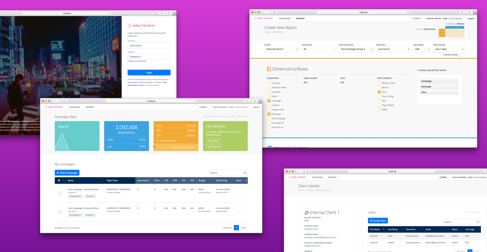

 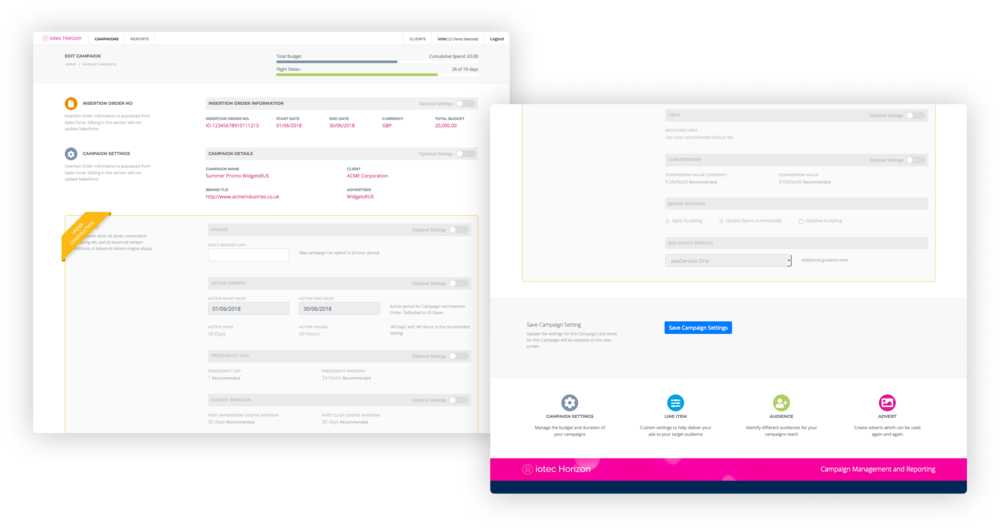
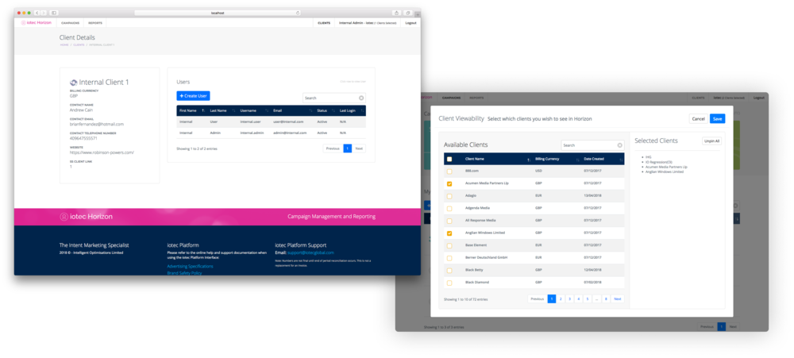
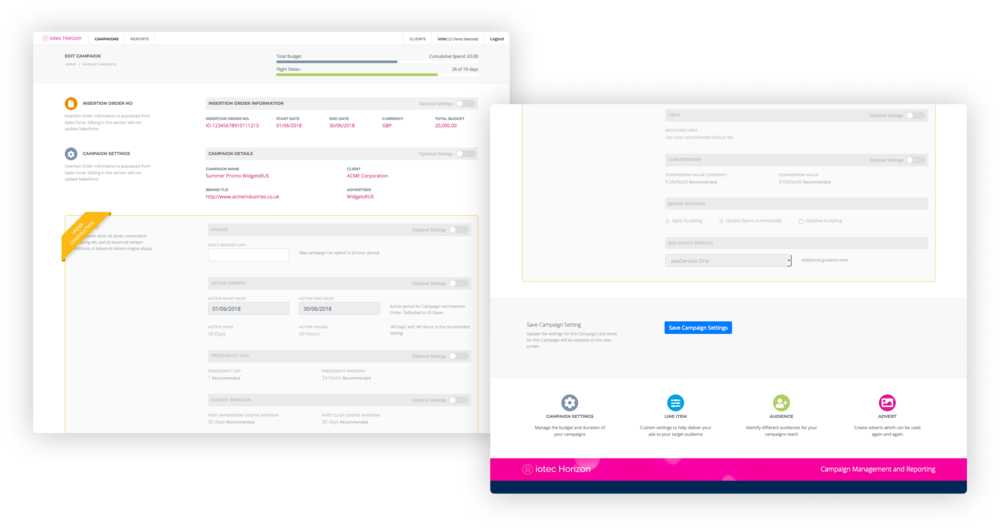
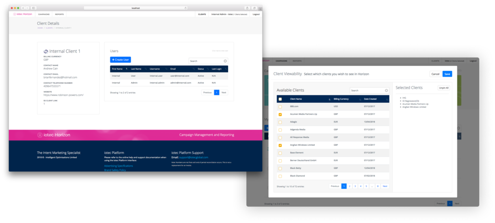


-
Thinking
-
Site Maps & User Flows
Redesigned the conceptual flow of the entire system with sensible and defined user workflows. New sitemaps with understandable and natural functional areas, allowing users to build up their campaign in a logical understandable fashion. This allowed for consistent user navigation and a component-based construction minimising redundant configuration and allowing for flexibility of creation order.
 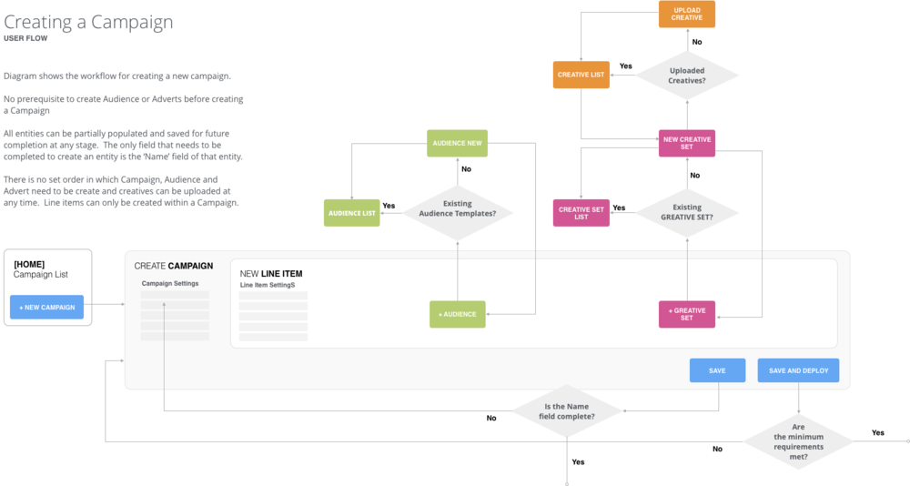
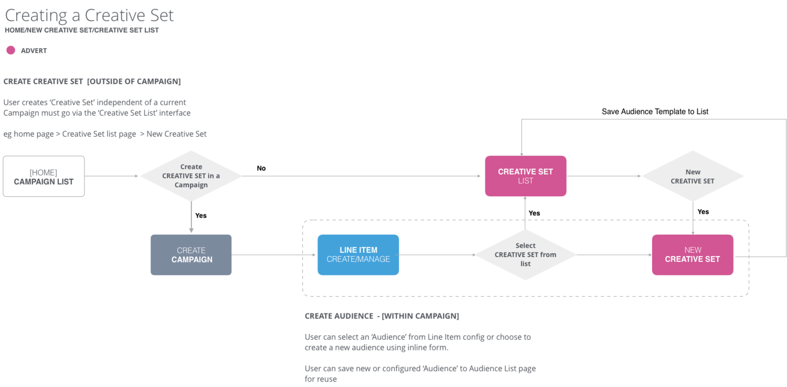
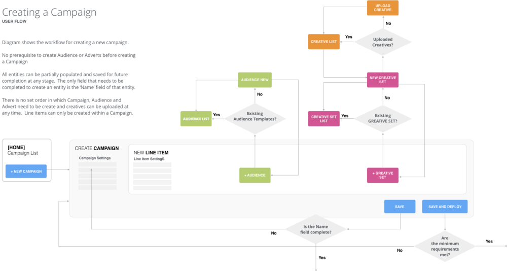
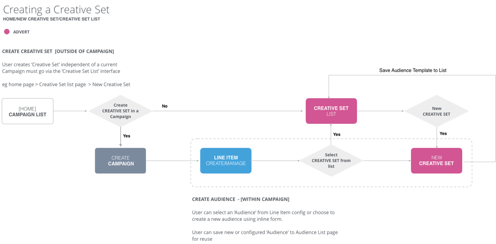


-
Site Maps & User Flows
-
Design Process
-
The design process consisted of several stages produced through design workshops in consultation with multiple user types. This allowed construction for different users requirements and feeding these back to other user groups and stakeholders. This enabled iterative design leading to a unified vision that guided the development and implementation process.
-
DESIGN PROCESS PART 1 (WIREFRAMES)
After initial functional flows and conceptual areas were determined, wireframes were produced to validate these. Merge technical functional areas into user story of practical UX focused flows. This allowed users to confirm that their specific requirements are fulfilled in a visual and easy to understand manner. These prototypes were also used to identify components in addition to giving a deeper consideration to technical implementation at an early stage. This process contributed greatly into planning out of work, identifyinng the critical path/blockers, as well as time estimates and work prioritisation.
-
PART 2 (HIGH FIDELITY MOCK-UPS)
After the wireframing had been completed an initial set of rough high-fidelity mock-ups were produced to give a more accurate reflection of visuals and look. Components begin to be more fully specified and evaluations of feasibility more thoroughly considered and used to show higher level and more technical stakeholders. Iteration continued at this stage of which some of the visuals were used as semi interactive mockups for user studies.
-
HTML TEMPLATES
The final stage of this process is to begin HTML/CSS/JS templates supported by stubbed backend functions which would form the basis of the final implementation. This also helps specify technical requirements and contracts the backend will have to fulfill for frontend functionality. From this, the requirements for the underlying API could be specified and locked down.
Within this process, more technical investigations could begin organically such as available plugins or tools that could aid the development of the solution. With the levels of mock-ups that were produced at previous stages, the buy-in of other stakeholders was ascertained as well as allowing for an easy representation of the overall vision for the entire length of the project as further engineers and people were introduced to the project.
A consistent design language could begin to be solidified which would be the foundation of the continued scope expansion overtime from future work.
(A small selection of templates much functionality and areas not shown).
-
-
API Design
-
The implementation of the Horizon Platform allowed the opportunity to set a new direction for a consistent underlying technical architecture. For this, I proposed, and along with the team implemented, a RESTful web API to power this and future projects.
The prior planning process informed the contract that the backend would have to fulfil to enable frontend functionality. Thereby allowing parallel development of both in a cross-team environment.
Standard web-based technologies such as JSON, HTTP, and verbs, a resource based structure, JWT among others.
GET, PUT, POST, PATCH, DELETE region.iotecglobal.com/api/{resource}/{id}
-
-
Conceptual Design & Flow
-
For more complex fundamentals such as campaign creation in a complex system, the conceptual map must be considered for how the user can be guided into how elements fit together with a view to constructing their completed campaign. To do the this the creation flow must happen naturally without the need for 'a manual' but must still allow for an advanced user to choose their own path.
To be added: Advert -> creative flow, campaign and line item creation flow and screens.
-
-
WORK PLANNING & SIMPLIFICATION
-
Part of this process was taking an existing legacy platform and improve its usability and the speed and quantity in which campaigns can be created and managed. Since other legacy systems depended on the existing implementation and cannot be broken change had to be managed and plans considered to minimise engineering effort whilst achieving maximum improvements. This included planning features such as Pan Exchange campaigns, KPI targets/alerting and configuration reduction where defaults and inferences could be made to alleviate pressure on the users but still allow advanced control or analysis if required.
This was connected to new concepts such as Audiences and Creative Sets that the new platform leverage a modular design but have no breaking effect on legacy systems. Also building on the conceptual flow of functional areas from a users perspective.
These among other contributing projects needed to analyse existing systems, identify redundancies and work out the critical work path and the resource required to fulfill them. Many other required projects such as deployability states were also required to enable modualr design to allow the user who now has a greater understanding, the freedom to create and manage how they seem fit vs. being unnecessarily constrained by the system.
 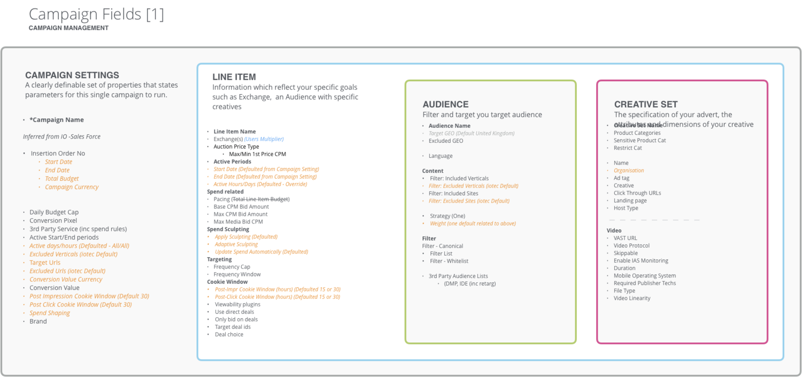
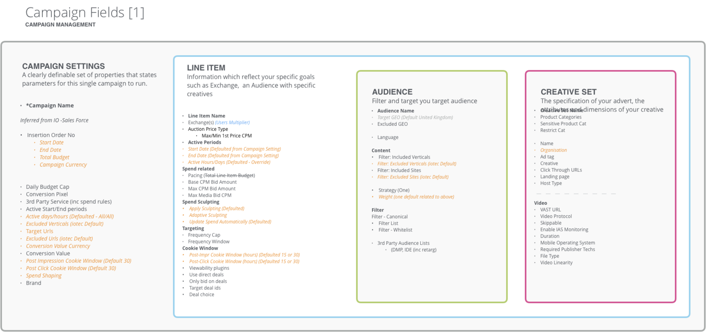
-
Other Information
-
Download
Designed application concept, user interface, and user experience. Fully responsible for the implementation and programming of the final published app in Swift.
The best multi-workout personal trainer for iPhone. Follow the optimal regime of sets to reach your performance goals for push-ups, sit-ups, or squats. Track your progress and workouts through the extensive levels system to reach your ultimate goals, all in the most simply designed app of its kind. No gym equipment required. This three pronged approach works out each of your main body areas to give you the full Trifecta Workout.
Dribbble LinkedIn Twitter Email